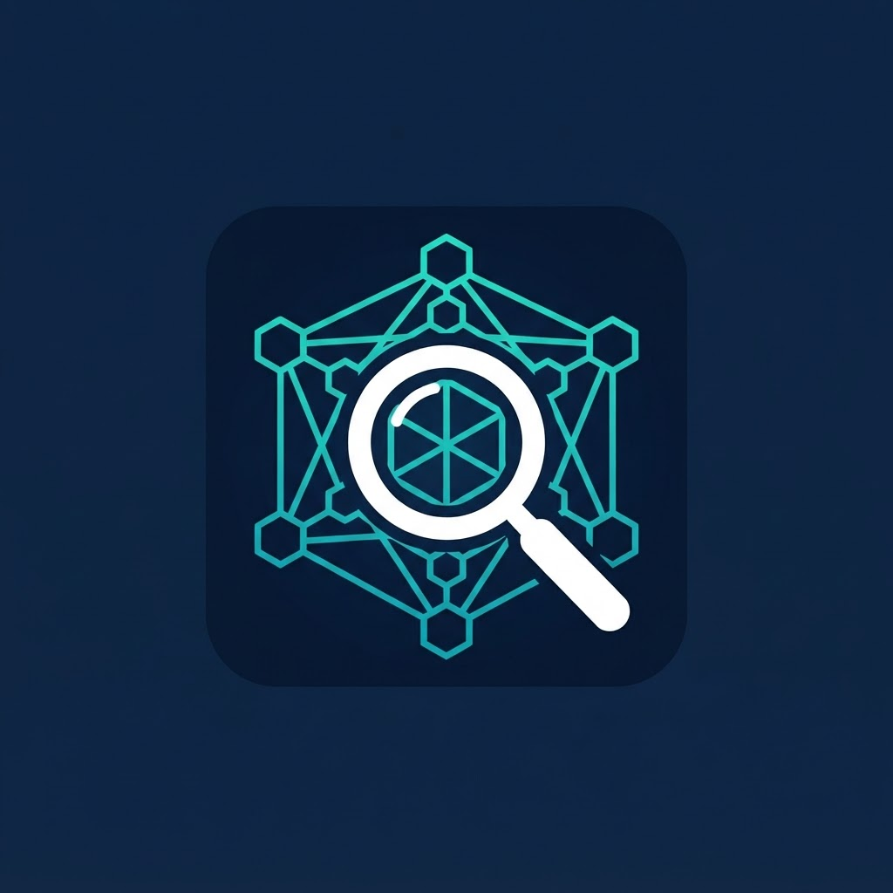

Pay-per-call on-chain token intelligence for any ERC-20 on Base and Ethereum. No API keys, no subscriptions — your agent pays per call with USDC over x402.
The composed tier: verdict + 24h supply forensics + wallet flows + settle-safe screen in one reproducible analyst memo, with a red-flag table and a bottom-line settlement recommendation. No LLM calls — same block, same memo.
One call, the whole story: activity score 0–100, verdict tier (RED_HOT → DORMANT), whale & concentration flags, and a plain-English take you can ship straight to your users.
Exact 24h net supply change with every mint/burn event, or full wallet flow analysis with top counterparties. Base + Ethereum mainnet.
Try before you fund: 3 verdict calls + 1 token/wallet call per visitor per day, no wallet needed. x402 takes over automatically when the free tier runs out.
| Endpoint | Price | What you get |
|---|---|---|
memo | $0.25 | Composed due-diligence memo: executive summary, supply forensics, wallet flows, settle-safe screen, severity-ranked red-flag table, bottom-line settlement recommendation. Optional counterparty trust screen. |
verdict | $0.02 | Token activity score, verdict tier, mints/burns, transfers, unique wallets, largest transfer, concentration share, flags, plain-English take. |
token | $0.05 | Exact 24h net supply change with full mint/burn event detail. |
wallet | $0.05 | Wallet flow analysis: transfers in/out, net, top counterparties. |
canton | $0.05 | Canton Network (CC) burn/mint snapshot: 24h ratio, cumulative, net emissions. |
linea | $0.05 | Linea burn-vault audit snapshot. |
info | Free | Service directory probe — machine-readable listing of all endpoints. |
openapi | Free | Full OpenAPI 3.1 spec, machine-readable. |
curl "https://solene-fa2010da.base44.app/functions/forensicsApi?endpoint=verdict&address=0x833589fCD6eDb6E08f4c7C32D4f71b54bdA02913&chain=base" # Unpaid → HTTP 402 with x402 v2 payment requirements. # Pay from any x402-capable client and retry — the same call returns your data.
?endpoint=verdict&address=0x…&chain=base returns:
Plain take: "Mildly active with fresh mints and one whale move — watch the top wallets, nothing screams exit scam but nothing screams momentum either."
?endpoint=memo&address=0x…&chain=base ($0.25; $0.35 with &counterparty=0x…) returns one memo:
Deterministic composition — no LLM calls: the same block data yields the same memo, so an agent can cite it as a reproducible decision record. The three source sections would cost $0.09 separately; the memo is the synthesis.
The flagship settle-safe screen now covers XRPL issued currencies — the structural counterparty risk of IOUs, machine-readable:
KNOWN_CANONICAL · RLUSD · issuer blackholed · settle-safe: true&issuer=r...¤cy=USDReads run against public rippled/Clio servers — no API keys. Same wallet, same x402 payment rail. XRPL verdict/memo arrive in Phase 2.
Who runs this service. On-chain Forensics is owned and maintained by Leo Sanders (leohoudinisanders@gmail.com), a finance professional and independent service operator. Day-to-day operation, monitoring and incident response are handled with the assistance of Solene, an AI agent (personal assistant platform) configured and supervised by Leo. Solene has no autonomous authority over funds: payouts settle only to the fixed USDC address published in every 402 challenge (0x8EBf…6fb9 on Base), and all operational changes are reviewed and deployed by the owner. Support contact: leohoudinisanders@gmail.com (responses within one business day).
Safeguards against compromised responses. Consuming agents should be able to trust this service even under a worst-case server compromise:
OpenAPI 3.1 specification, served from this origin:
0xf40bc462…08c2.Acting on what you found? Swap any settleable Canton token (CC, HECTO, USDCx, CBTC, EDELx) through OneSwap's atomic DvP escrow with the same x402 pay-per-call model — your agent gets a deposit party, funds it with a plain transfer, OneSwap settles atomically and the output returns to the sender. Settlement-accurate quotes $0.02, escrow swaps $0.05, lifecycle reads free.